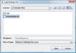

You can quickly load previous settings which allow you to run identical settings for similar files within Statsres. Go to the menu bar and click File and then Load and then Settings. On the dialog box, choose the required file - it must have a .srs (Statsres Settings File) extension. After loading, the desired settings will appear in the interface as if you had entered them manually. Wonderful!